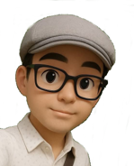
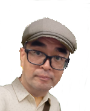

I am KAZU, representative of the "Exciting Programming Lab: Heyheymitchy."
The concept behind our Lab (Heyheymitchy) is not about "teaching" in the sense of coaching students for entrance exams.*1
Coaching this through programming
● "The power to open up the future" will come to you
●"Expand the power to notice and think while excited"
●We will practice "STEAM education that fuses [art × music × IT] beyond the humanities and sciences"*2
Our Lab(Heyheymitchy) will coach your future !*3
*1 Concept: Basic idea
*2 STEAM: Education that nurtures the power to think, create, and transmit by oneself
*3 Coaching: Supporting the power to survive in the future
■Experience in operations from sales planning to development and maintenance operation at a major IT company
■In the homepage construction business, familiarity with various languages (HTML / CSS / PHP / Python etc.)
■In the music production of hobbies (I), AviUtl / SONAR / R8 / Paint Shop etc. learned by yourself and MV production activities
■In the game production of hobby (II) In the game production, acquire skills by learning Unity / Scratch on WEB learning
■In the qualification acquisition of hobby (III), "Basic information processing", "color coordinator" and "eco-certification" passed
■Currently, G-STEAM member (member of the International STEAM Education Promotion Organization)